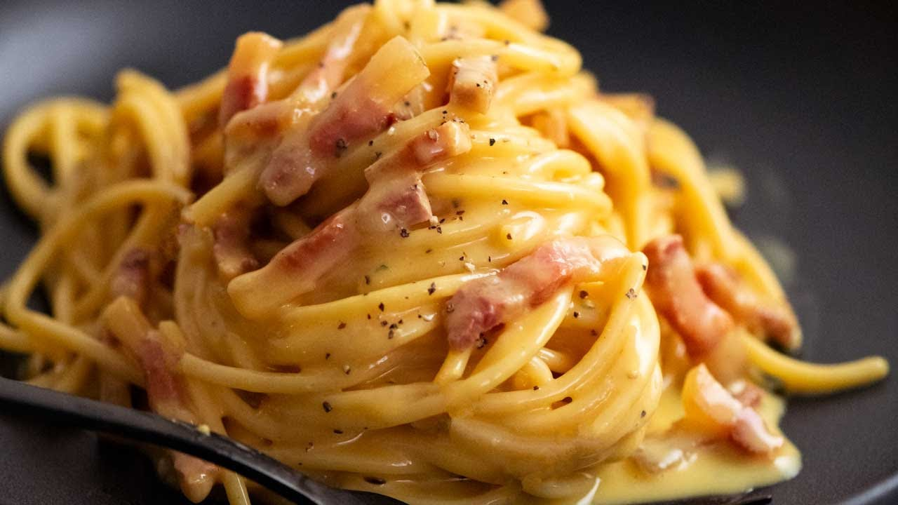

Spaghetti Carbonara

Description
Combine fresh eggs, with crispy guanciale, salty pecorino cheese and pepper to create the perfect, classic Roman pasta dish, Carbonara. Make this classic the right way and I promise, your tastebuds will thank you.
Ingredients Needed
- 5l of water
- Pinch of rock salt
- 300g of spaghetti
- 150g of guanciale
- 200g of pecorino cheese
- 4 eggs
- Pepper, as needed
Steps
- Spaghetti carbonara takes just a short time to make so first up, boil the water to cook your pasta in a large pot.
- Cook the pasta according to the packet instructions when it comes to time, making sure the pasta is al dente.
- Cut the skin off the guanciale (making sure to leave the peppery/seasoned crust), then slice it into thin strips
- Put the large fry pan on the stove at a low to medium heat. For the spaghetti carbonara recipe to be just right, add the guanciale into the pan, let it cook very slowly and it will create its own delicious oil.
- Let the guanciale simmer and crisp up very gently.
- Get your mixing bowl and add 4 eggs, then whisk them really well.
- Next, add the pecorino cheese to make this spaghetti carbonara recipe, and lots of pepper before mixing it together really well. This will create a scrumptious cream for you to add to your pasta.
- Once the pasta has boiled to your preferred taste, using a set of tongs, take out the pasta from the boiling water and add it straight to the pan, making sure small drops of the water mix into the pan too.
- Turn off the cook top, so the pasta and guanciale stop cooking.
- Next, using the ladle, get a full scoop of pasta water out of the pot and add it to the egg and cheese cream, then mix through well using a fork.
- Now, turn the cook top back on a low heat, add some pasta water to the pan, and now, pour the cream over the top, then mix it through using your tongs - be gentle, but fast! Let it cook through but don't let the eggs scramble or you will end up with a frittata!
- Keep mixing the cream through until it just starts to thicken, stir is through and then serve.